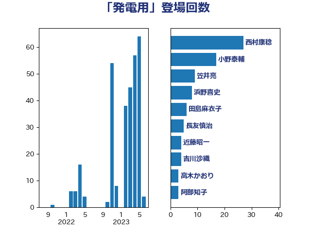

単語「発電用」

| 西村康稔 | 自由民主党 | 27 回 |
| 小野泰輔 | 日本維新の会 | 17 回 |
| 笠井亮 | 日本共産党 | 9 回 |
| 浜野喜史 | 国民民主党 | 8 回 |
| 田島麻衣子 | 立憲民主党 | 6 回 |
| 長友慎治 | 国民民主党 | 5 回 |
| 近藤昭一 | 立憲民主党 | 4 回 |
| 吉川沙織 | 立憲民主党 | 4 回 |
| 高木かおり | 日本維新の会 | 3 回 |
| 阿部知子 | 立憲民主党 | 3 回 |
| 細田健一 | 自由民主党 | 3 回 |
| 石川博崇 | 公明党 | 3 回 |
| 平山佐知子 | 無所属 | 3 回 |
| 小林一大 | 自由民主党 | 3 回 |
| 萩生田光一 | 自由民主党 | 2 回 |
| 米山隆一 | 立憲民主党 | 2 回 |
| 竹内譲 | 公明党 | 2 回 |
| 石垣のりこ | 立憲民主党 | 2 回 |
| 阿達雅志 | 自由民主党 | 1 回 |
| 鈴木義弘 | 国民民主党 | 1 回 |
| 進藤金日子 | 自由民主党 | 1 回 |
| 逢坂誠二 | 立憲民主党 | 1 回 |
| 辻元清美 | 立憲民主党 | 1 回 |
| 西村明宏 | 自由民主党 | 1 回 |
| 篠原孝 | 立憲民主党 | 1 回 |
| 空本誠喜 | 日本維新の会 | 1 回 |
| 礒崎哲史 | 国民民主党 | 1 回 |
| 泉健太 | 立憲民主党 | 1 回 |
| 江田憲司 | 立憲民主党 | 1 回 |
| 村田享子 | 立憲民主党 | 1 回 |
| 岸真紀子 | 立憲民主党 | 1 回 |
| 岸田文雄 | 自由民主党 | 1 回 |
| 山崎誠 | 立憲民主党 | 1 回 |
| 太田房江 | 自由民主党 | 1 回 |
| 大島敦 | 立憲民主党 | 1 回 |
| 吉良よし子 | 日本共産党 | 1 回 |
| 勝俣孝明 | 自由民主党 | 1 回 |
| 伊藤孝江 | 公明党 | 1 回 |
| 井林辰憲 | 自由民主党 | 1 回 |
| 中村裕之 | 自由民主党 | 1 回 |
| 中川宏昌 | 公明党 | 1 回 |